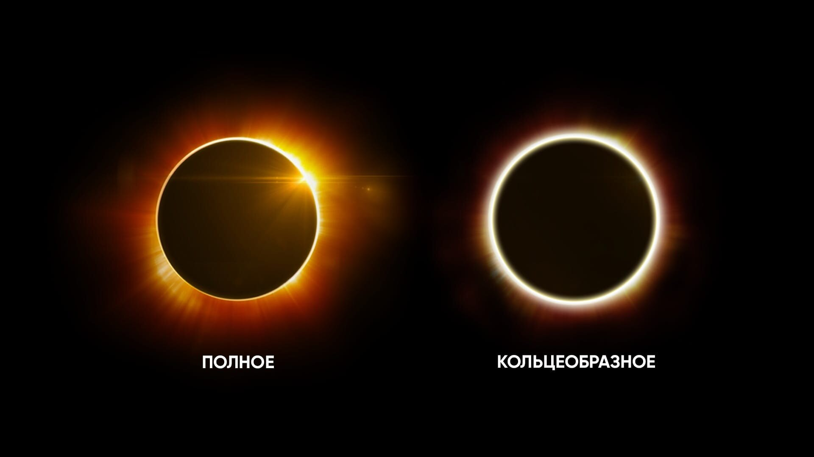

{kind=link}
Формирование спутников у планет
В 3-м издании "Четырех лекций о теории происхождения Земли" О.Ю. Шмидта была высказана общая идея о происхождении спутников:
"При образовании планет, в процессе сближения частиц с крупными зародышами планет, некоторые из частиц, сталкиваясь, настолько теряли скорость, что выпадали из общего роя и начинали обращаться вокруг планеты. Таким образом, около планетного зародыша образуется сгущение - рой частиц, обращающихся около него по эллиптическим орбитам. Эти частицы также сталкиваются, изменяют свои орбиты. В уменьшенном масштабе в этих роях будут происходить те же процессы, что и при образовании планет. Большинство частиц упадет на планету (присоединится к ней), часть же их будет образовывать околопланетный рой и объединяться в самостоятельные зародыши - будущие спутники планет… При осреднении орбит частиц, образующих спутник, последний приобретает симметричную, т.е. близкую к круговой, орбиту, лежащую в плоскости экватора планеты."
- О.Ю. Шмидт
Заблуждение: Солнце и Луна имеют одинаковый угловой размер
Часто можно услышать утверждение, что Солнце и Луна имеют примерно одинаковый размер на небе. На самом деле, это не так. Солнце значительно больше Луны, а также находится на значительно большем расстоянии от Земли вот только расстояние между Землей и Солнцем, а так же между Землей и Луной постоянно меняются, поэтому и угловые размеры этих объектов разные в разные моменты времени. Иногда луна чуть больше Солнца, а иногда наоборот.
Спутники Плутона вращаются в абсолютном хаосе

Если бы вы жили на одном из спутников Плутона, вам было бы трудно определить, когда и в каком направлении будет вставать солнце. Спутники Плутона Никс и Гидра колеблются наиболее непредсказуемо среди всех. Причиной является постоянно меняющееся гравитационное поле обусловленное тем, что гравитационное воздействие Харона создаёт барицентр вне Плутона. Ориентация спутников меняется непредсказуемо, вращаясь вокруг барицентра двойной системы Плутон-Харон. Эффект усиливается из-за комковатой, а не сферической формы спутников.
При этом спутники Плутона находятся в резонансе, что может указывать на то что система спутников была образована в результате некого крупного столкновения.